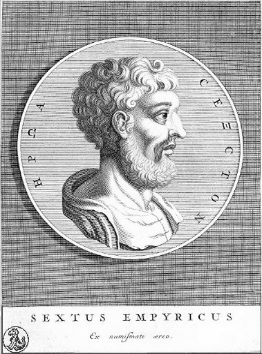

I am currently working on a dissertation on the nature and scope of Pyrrhonian Skepticism, as understood in the works of Sextus Empiricus. In speaking of the “scope” of Skepticism, I refer primarily to the extent to which Skeptics bear epistemic commitments. In addition to taking a broad view of Pyrrhonism and its place in philosophy, I focus on the implications of two key areas for the scope of Skepticism: the Skeptic’s ethical view and the Five Modes of Agrippa. I maintain the bibliographic database for this project at Pyrrhonism.org.